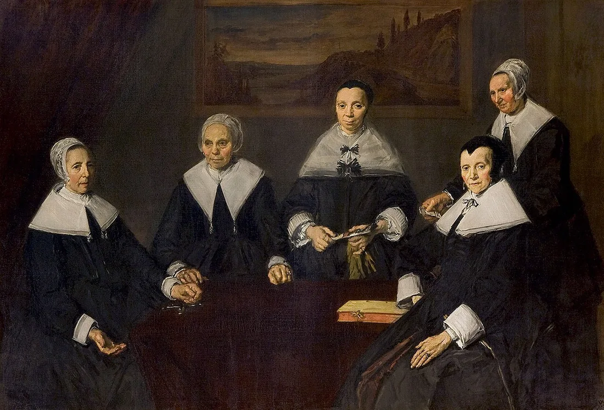

Para o docente
Dez sessões
Tempos, materiais e condução.

A tarefa Pergunta Humana é realizada na sessão 03. A turma conhece a caverna, Sísifo, CHIROPTERA, Abramović, The Egg e Truman. Esse contexto informa a condução; não constitui um aviso a repetir aos alunos. O enunciado publicado permanece intacto.
Sessão 01
O que vemos
Uma descrição, uma hipótese, uma pergunta.
Recursos de uma sessão anterior; sem nova tarefa avaliada. Mobilizar observações e notas quando necessário.
Abrir sessão →Sessão 02
O que somos
Uma decisão e a razão que a sustenta.
Recursos de uma sessão anterior; sem nova tarefa avaliada. Mobilizar observações e notas quando necessário.
Abrir sessão →Sessão 03
Pergunta Humana
Pergunta → fontes → teatro-documento → defesa.
- Recupera · 10 min
- Vê · 5 min
- Investiga · 60 min
- Prepara · 35 min
- Apresenta · 70 min
Sessão 3 exclusivamente para a tarefa já comunicada. Sete grupos: 7 × (até 8 min de apresentação + 1 min de defesa + 1 min de transição) = 70 min. Orientação 10 + enunciado 5 + investigação 60 + preparação 35 + apresentações/defesa 70 = 180 min. O tempo que um grupo não utilizar fica para feedback e fecho. Usar os conhecimentos prévios de caverna, Abramović, The Egg e Truman, sem voltar a exibi-los. Avaliar pelos critérios e pesos publicados, sem criar uma nova grelha.
Abrir sessão →Sessão 04
Uma pessoa, duas vozes
Uma microcena com objetivos diferentes.
- Recupera · 10 min
- Vê · 30 min
- Decide · 30 min
- Faz · 90 min
- Leva · 20 min
Retomar a investigação anterior sem voltar a exigir a mesma entrega. A exploração e a microcena abrem a oficina seguinte: argumento e guião em teatro, cinema ou áudio. O bloco de laboratório inclui dez minutos de pausa.
Abrir sessão →Sessão 05
Escolher muda a história
Argumento narrativo, versão 1.
- Recupera · 10 min
- Vê · 30 min
- Decide · 30 min
- Faz · 90 min
- Leva · 20 min
Retomar ensaios e ideias já produzidos como apoio à escrita. Não criar uma entrega cumulativa de todos os materiais antigos. O bloco de laboratório inclui uma pausa de dez minutos.
Abrir sessão →Sessão 06
O resultado basta?
Um dilema com duas razões defensáveis.
- Recupera · 10 min
- Vê · 30 min
- Decide · 30 min
- Faz · 90 min
- Leva · 20 min
Selecionar os excertos do condutor, ponte e contraste de critérios; decidir antes de revelar as respostas. Alternativa sem vídeo: o caso textual da sessão. A lição completa e o progresso antigo ficam disponíveis. O laboratório inclui uma pausa.
Para ver: The Ethics Centre, «Deontology» (3 min 10 s), depois da aula; The Ethics Centre, «Ethical Decision Making» (3 min 30 s), depois da aula. Vídeos em inglês, escolhidos na curadoria de 28/10; convém vê-los antes de os propor à turma.
Abrir sessão →Sessão 07
A regra vista de outro lugar
Argumento narrativo, versão 2.
- Recupera · 10 min
- Vê · 30 min
- Decide · 30 min
- Faz · 90 min
- Leva · 20 min
Não tentar percorrer integralmente as três lições e todos os casos. Escolher o material que serve o problema da turma, mantendo os recursos completos acessíveis. Incluir pausa no laboratório. A ligação aos direitos entra na revisão do critério: escolher uma fonte pertinente, sem acrescentar uma sequência paralela de tarefas.
Para ver: CrashCourse, «What Is Justice?: Crash Course Philosophy #40» (10 min 15 s), depois da aula. Vídeos em inglês, escolhidos na curadoria de 28/10; convém vê-los antes de os propor à turma.
Abrir sessão →Sessão 08
Fazer ouvir a discordância
Guião integral, versão de trabalho.
- Recupera · 10 min
- Vê · 30 min
- Decide · 30 min
- Faz · 90 min
- Leva · 20 min
A cápsula é uma seleção: Tchékhov e Pinter pertencem a contextos distintos. Usar uma passagem para mostrar a operação de escrita, em vez de acrescentar biografias longas. Pausa no laboratório.
Abrir sessão →Sessão 09
Mudar a forma, rever o efeito
Guião final e duas alterações comentadas.
- Recupera · 10 min
- Vê · 30 min
- Decide · 30 min
- Faz · 90 min
- Leva · 20 min
Retomar as fontes e evitar impor contagens de páginas iguais aos três formatos. A revisão deve reconhecer escolhas defensáveis, sem transformar preferência de estilo em erro. Pausa no laboratório.
Abrir sessão →Sessão 10
Mostrar o guião, explicar as escolhas
Argumento e guião apresentados e comentados.
- Recupera · 10 min
- Vê · 20 min
- Decide · 35 min
- Faz · 85 min
- Leva · 30 min
O bloco de apresentação comporta oito grupos com cerca de sete minutos de comentário e três de perguntas, ajustando as transições. Com mais grupos, prolongar este momento. A primeira tarefa conserva a sua avaliação; não criar novos pesos sem uma decisão própria do docente.
Abrir sessão →